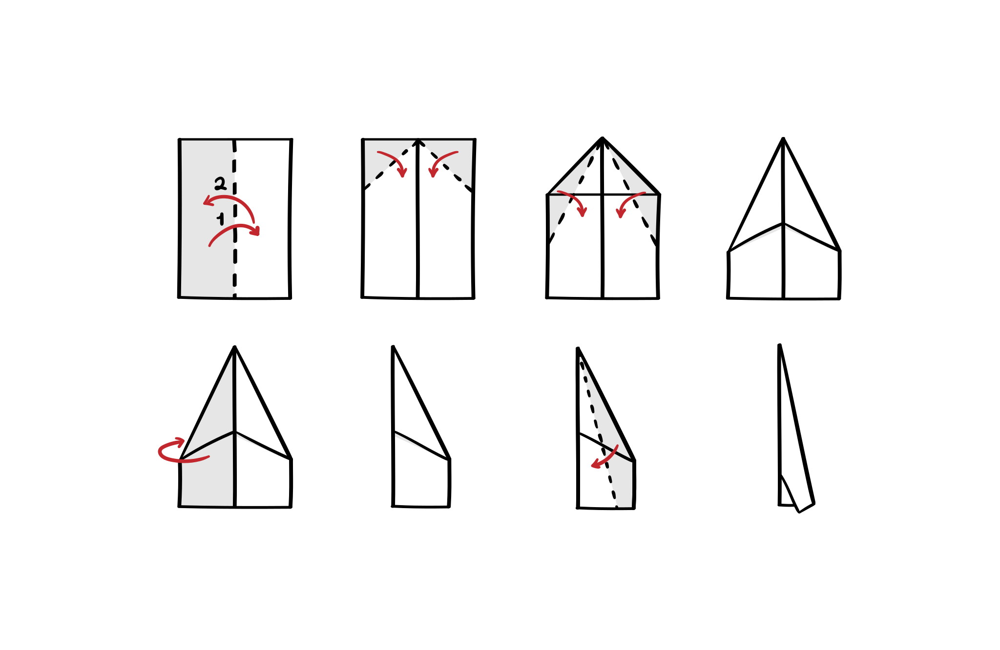

You can use plain white paper or any other type, as long as it's not too thick or heavy
Folding Instructions

Fold in Half:
Fold the paper in half lengthwise (hotdog-style). Make sure the edges align neatly.
Unfold and Fold the Corners:
Unfold the paper back to its original position. Now, take the top corners and fold them towards the center crease, creating two triangles at the top.
Fold the Triangles Inward:
Next, fold the triangles you just created inward, so their long edges meet along the center crease. This forms a narrower triangular shape.
Fold in Half Again:
Fold the entire paper in half along the center crease, so the triangles are on the inside
Fold the Wings Down:
Take the top layer of paper on both sides and fold them down diagonally, aligning the edges with the bottom edge of the plane. This forms the wings of the airplane.
Fold the Wings Down Again:
Fold the wings down once more along the existing crease. This helps to stabilize the wings and improve the flight.
Shape the wings:
Adjust the wings by gently bending them slightly downward. This tweak can affect the flight pattern of the paper airplane
Flying Tips!
Hold the paper airplane at its midpoint (where the wings are folded)
Find an open area and give it a gentle toss, aiming slightly upward.
Experiment with the force and angle of the throw to achieve the desired flight path.